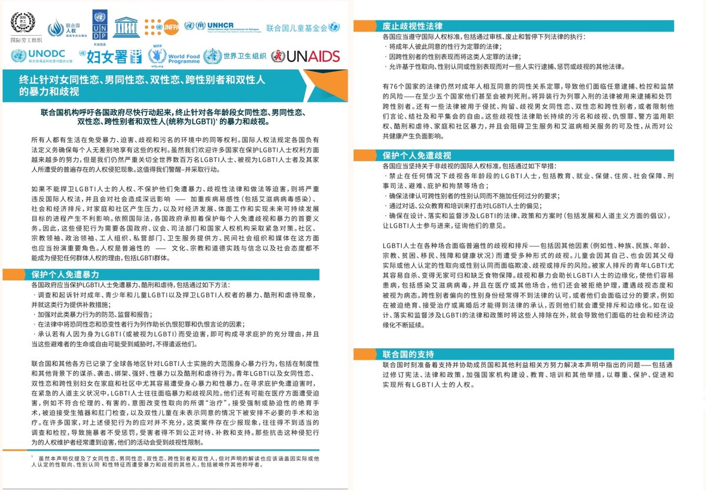

RedFox（2代目）🇲🇴🇭🇰
@FoxRed695449
联合国秘书长安东尼奥·古特雷斯：很不幸，暴力和歧视仍然是世界各地数百万男女同性恋、双性恋、跨性别者、性别奇异者和间性者等(LGBTIQ+)人士日常生活的一部分。这些人士面临着仇恨言论、攻击和权利限制的猛烈冲击。
我们必须齐心协力，推动废除歧视性法律，打击暴力和有害习俗，制止将边缘化群体作为替罪羊的做法。
联合国作为自豪的伙伴共同参与这些努力。我们将永不停息，直到落实所有人的权利——无论是谁，无论爱谁。
